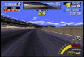

COUNTRY CIRCUIT
Tactics for the first stage
The pink color area = less accelerating area
The nunber of [] = Sift change number for secure driving
The pink color area = less accelerating area
The nunber of [] = Sift change number for secure driving
 |
first corner(right)
You can manage to control the car even keeping the speed maximum, but
as soon as you lose concentration, you'll get course out. You should step off the gas a little
before you go into the corner. |
 |
second corner(right)
The car will inevitably come to the side, but if you try to go into the inside
the rear tire will slide. |
| third corner(left)
If you are in maximum speed and try to go into the inside, the rear tire will spin. | |
 |
fourth corner (right)
Enter from outside and make a slight right turn by delicatly reducing
the speed. When you reach the inside of the curve with a space of about
one car between the curve and your vechecle, step on the gas and
expand toward the outside of the track. In case of full acell, it is
easy to trace the rut. |
|  | (final)fifth corner (right)
Cut the steering ahead of time, and if you reach the inside, with a
full accelaration run through. If you are sure that you could make the
turn place the steering to netural position. If the timing is good
you could run through this curve with full speed. |

|

|